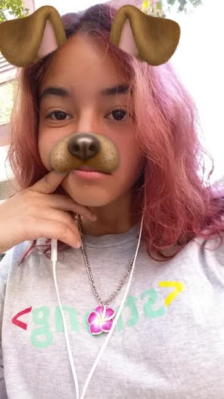

In my journey of self-confidence, I have experienced many times where I have had low self-esteem, didn't believe in myself and thought I
was incapable of some things. Because of this I almost gave up on going on a career path I greatly wanted. As a rising junior, I need to
figure out my future.
This led me to wanting to go into the Computer Science career. However when I brought this topic up, people would
give negative feedback on this. They would say things like "Girls don't go into careers like that", "You need to be good at math to do this",
"Computer Science is really hard" and many more comments like this. Hearing these kind of comments added with my already low confidence and
self-esteem, I decided Computer Science was not for me. However my mom is a proud feminist and decided to enroll me into the Girls Who
Code program to help me see why I should go into Computer Science. Being in this program has provided me with friendships
I never thought I'd have, helped me realize how easy coding really is compared to what everyone told me and has also encouraged
to believe that everything is possible for me and to never be afraid of failure or things not going how I wanted them to. Because of this
experience, I've decided to continue pursuing a career in the Computer Science field, and I hope to one day become either a Video Game Developer
or an Animator in Pixar or Disney.